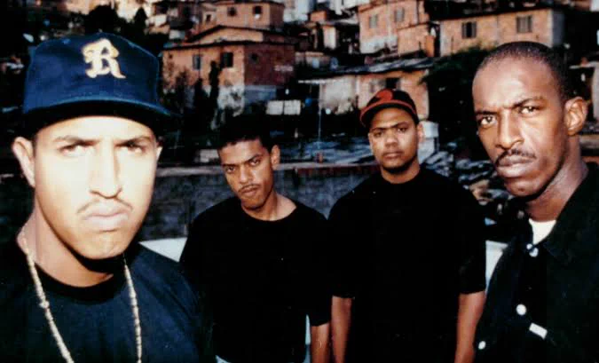
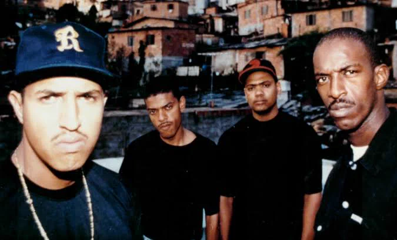
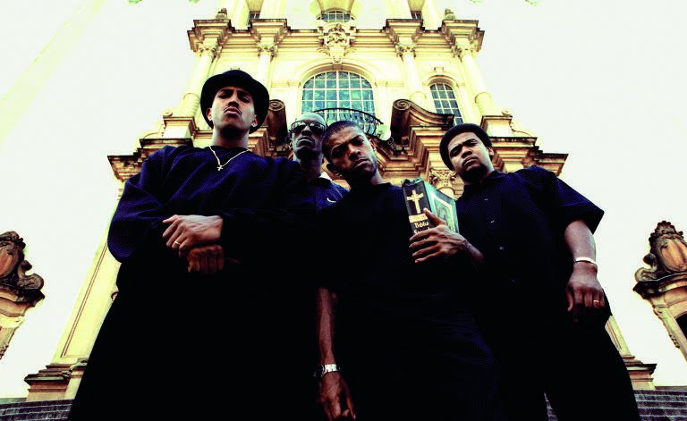

Racionais MC's e a luta contra a desigualdade em "Sobrevivendo no Inferno"
 Em 1997, o Brasil vivia um dos piores índices de desigualdade social.
Brown, Blue, Edi Rock e KL Jay falam sobre a dificuldade que é não sucumbir ao sistema e não julgam aqueles
que acabam caindo no mundo do crime, para poder colocar comida na mesa.

Os Racionais combatem a desigualdade. Muitas pessoas não tem acesso a uma qualidade de vida digna apenas
pela cor da sua pele.
Em 1997, o Brasil vivia um dos piores índices de desigualdade social.
Brown, Blue, Edi Rock e KL Jay falam sobre a dificuldade que é não sucumbir ao sistema e não julgam aqueles
que acabam caindo no mundo do crime, para poder colocar comida na mesa.

Os Racionais combatem a desigualdade. Muitas pessoas não tem acesso a uma qualidade de vida digna apenas
pela cor da sua pele.
Em "Capítulo 4, Versículo 3", vemos ele falando como o capitalismo faz o uso da mídia para
alienar as pessoas, visando perpetuar os lugares das classes na sociedade.
Eles combatem o racismo estrutural e toda a violência policial que o negro sofre.
Eles citam diversas estatísticas sobre a desigualdade.
• 60% dos jovens de periferia sem antecedentes criminais já sofreram violência policial
• A cada quatro pessoas mortas pela polícia, três são negras
• Em universidades brasileiras apenas 2% dos alunos são negros
Podemos ouvir o relato da vida de um jovem que entra no crime em "To ouvindo alguém me chamar",
ele ostenta tudo que o crime te entrega, a fama/luxo mas vê tudo chegando ao fim após ser baleado.
A cruel vida de um presidiário é retratado em "Diário de um Detento".
Brasil vivia em um governo neoliberal onde tudo tinha um preço, principalmente negros e presidiários.
Diversos presídios em situações precárias, eram apenas tratados como estatística.
A violência policial é um tema bastante abordado no álbum, eles tocam muito no ponto da polícia
ser violenta em comunidades sobretudo com negros, que já são julgados apenas pela cor/status social.
Em "Qual mentira vou acreditar" eles falam bem sobre isso.
Eles também buscam passar a mensagem que por mais tentador que seja, no final das contas, o crime não compensa.
Na faixa "Formula Mágica da Paz" eles falam que por mais seja difícil, é possível não se tornar mais uma
estatística do sistema.
Mano Brown, Ice Blue, Edi Rock e KL Jay, o Racionais MC's
4 caras que mudaram a história do Rap Nacional e diversas vidas, principalmente em comunidades.
Tiraram pessoas do crime e motivaram muitos a serem algo além de apenas um número.

Os temas do álbum ainda são atuais, por mais que tenha se passado quase 30 anos desde o lançamento.
"Sobrevivendo no Inferno" deu voz a todos que nunca foram ouvidos, mudou a vida de diversas pessoas,
deu força para os que não querem virar uma estatística.
algo que começa de fato com uma saudação a um ancestral e o pedido de proteção jamais poderia dar errado.